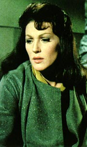
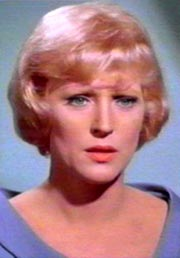
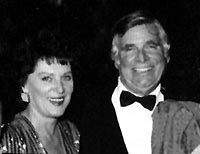
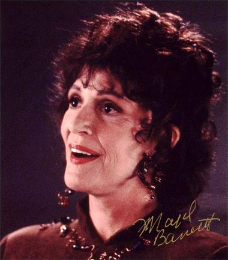
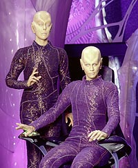
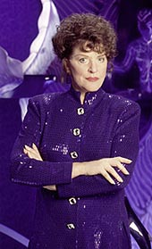
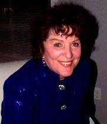
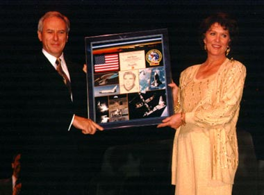

|
por Rosimeire Anne
Ela começou como uma personagem cortada do primeiro piloto da série e terminou como a mulher do criador de
Jornada nas Estrelas. E hoje a sra. Roddenberry defende a criação de seu finado marido com unhas e dentes, como se fosse dela.
 Ser mulher do dono é sempre uma boa coisa. Majel é a única pessoa que apareceu em todas as séries de
Jornada, exceto por Enterprise -- embora na maior parte das vezes seu papel fosse relegado ao de voz do computador. No piloto
"The Cage" ela interpretou a Número Um, durante a
Série Clássica foi a enfermeira Christine Chapel (reprisando o papel em alguns dos filmes para cinema), em
A Nova Geração e Deep Space Nine ela fez a mãe de Deanna Troi, Lwaxana. Em
Voyager, era a voz do computador.
Além da TV e do cinema, Barrett teve outros trabalhos relacionados a
Jornada, fazendo a voz do computador nos CD-ROMs "Star Trek: The Next Generation Interactive Technical Manual", de 1994, e "Star Trek Omnipedia", de 1995.
Majel Lee Hudec nasceu em 23 de fevereiro de 1932 em Columbus, Ohio. O nome Majel vem do nativo americano e significa "madeira afundada". Logo sua família mudou para Cleveland. Seu eterno amor por atuar começou quando sua mãe, Gladys, a colocou na escola de teatro Cleveland Playhouse.
Depois de terminar o colegial na Shaker Heights High School, Majel foi para a Universidade de Miami, Flórida (EUA), para fazer o curso de Rádio, Teatro e Televisão. Enquanto isso, um de seus tios sugeriu que ela se tornasse advogada. "Ele queria segurar uma pedra onde estivesse escrito 'Hudec and Hudec'", disse Majel. "Eu ainda não sabia exatamente o que queria fazer, então disse que ia ficar em Miami e prestar a Faculdade de Direito."
Após ser reprovada na matéria de contratos, Majel decidiu abandonar o Direito. Por acasos do destino, um representante do Bermudian Theater estava conduzindo audições na universidade. Majel conseguiu o papel como "principal garota residente" e foi para o Bermudian por dez semanas.
Depois de retornar aos Estados Unidos, ela se mudou para Nova York e imediatamente ganhou um papel em uma peça para a Broadway. Infelizmente, a audiência em Boston não gostou da peça, que começou e terminou em uma semana. Majel se juntou a um grupo de teatro público, The Wagon Wheel, na região centro-oeste dos Estados Unidos, por dezesseis semanas e depois voltou a Nova York, onde conseguiu um papel em Solid Gold Cadillac. O grupo passou por todo país durante nove meses.
A peça levou Majel para Los Angeles pela primeira vez. Assim que voltou para Nova York, Majel já foi mandada de volta a LA para estrelar com Edward Thorton na peça "All for Mary", no Pasadena Playhouse. "Sempre soube que viria para LA", disse Majel. "Foi ótimo o fato de um personagem me trazer até aqui." Enquanto participava de "All For Mary", Majel conseguiu seu primeiro papel, um personagem em "Will Success Spoil Rock Hunter?", com Tony Randall, Jayne Mansfield e Groucho Marx. Sua carreira decolou, e ela acabou participando também de produções de teatro, como "Skin of Our Teeth" e "Idiot’s Delight", no Santa Monica Playhouse.
Majel conheceu Gene Roddenberry enquanto ele estava no Screen Gems desenvolvendo várias idéias para séries. Ela escreveu cartas de apresentação para todos os produtores na cidade, o que foi seguido por entrevistas. Muitos atores contavam com seus agentes para mandar amostras e resumos de seu trabalho, mas Majel sabia que poderia fazer um trabalho melhor mostrando seu talento de atriz pessoalmente.
Gene ficou impressionado com a determinação que Barrett tinha quando se tratava de sua carreira. Assim como Gene, outros produtores também se impressionaram e a carreira de Majel aflorou. Seu primeiro papel para a televisão foi em "Leave It to Beaver", de 1957. No ano seguinte, ela apareceu na série "The Buccaneer", e também no filme "As Young as We Are", estréia de Anthony Quinn na direção.
Majel participou de um curso de comédia dado por Lucille Ball e foi recrutada juntamente com doze homens e mulheres para a escola de Lucille. Barrett logo assinou contrato com o estúdio Desilu. Como os fãs de
Jornada devem saber, a Desilu acabou sendo a companhia que iria produzir
a Série Clássica. Majel continua conquistando papéis em séries, como "77 Sunset Strip" e "Dr. Kildare".
Nos anos seguintes, Gene e Majel tornaram-se amigos e aos poucos acabaram se apaixonando, enquanto Gene passava por um doloroso divórcio de sua primeira mulher. Gene amava pegar Majel em seu apartamento e levá-la em sua motocicleta para longos passeios pelas montanhas de Los Angeles. A carreira de Majel continuava a crescer. Ela teve uma participação não-creditada no filme "The Black Orchid", com Anthony Quinn e Sophia Loren, e também alguns papéis na série "Bonanza". Depois ela ainda participou de "Love in a Goldfish Bowl", nas aclamadas séries "The Lucy Show", "The Untouchables", com Robert Stack, e "Ben Casey".
Em 1963, Gene contratou Majel pela primeira vez, para um papel convidado na série "The Lieutenant". Nesse mesmo ano, ela apareceu em "The Quick and the Dead."
Em 1964, Gene contratou Majel como a Número Um, papel que ele criou especialmente para ela em sua nova série,
Jornada nas Estrelas. Ele já declarou que nunca havia considerado nenhuma outra atriz para a posição. Como já é bem sabido, a NBC rejeitou o piloto, em parte pela presença de uma mulher com uma posição tão importante quanto a de substituta do capitão de uma nave (no caso de sua ausência).
 Quando a série foi reformulada, ela encontrou o papel que queria -- a enfermeira. Entretanto, houve sérios obstáculos: "Uma vez que você foi rejeitada para um papel no piloto de uma série, você não tem chances de ser chamada novamente, então coloquei isso acima de mim e pintei meu cabelo de loiro, fui e sentei no escritório da produção. Gene veio e me apontou para sua secretária, indo para seu escritório depois", contou Majel. "Em poucos minutos, ele levou alguns papéis para a secretária e apontou novamente para mim. Ele estava caminhando para o escritório e então parou, voltou devagar e disse 'Majel'? Eu disse, se posso enganar você, posso enganar qualquer um." Gene estava convencido. Majel escolheu o nome da personagem. "Eu tinha acabado de interpretar uma personagem chamada Chapel e gostei do nome", ela disse. "Escolhi Christine porque me fazia lembrar de Sistine Chapel [Capela Sistina], havia algo poético nisso".
Para completar a transformação, o sobrenome Hudec foi mudado para Barrett. Entre o cabelo loiro e o sobrenome diferente, o estúdio não teve noção de que a Número Um estava de volta a bordo da Enterprise. Gene também fez dela a voz do computador da Federação, um papel que ela fez nos filmes de
A Nova Geração, em Voyager e em Deep Space
Nine.
Embora esse fosse o papel que a tornou mais conhecida, a carreira de Majel estava longe de limitar-se ao universo de
Jornada nas Estrelas. Ela continuou a aparecer em filmes como "Sylvia", "Country Boy", "A Guide for the Married Man", "The Second Hundred Years" e "Track of Thunder."
 Gene e Majel juntos mudaram-se em 1968. No ano seguinte, em agosto, enquanto Gene estava visitando lugares no Japão, ele percebeu o quanto sentia falta dela. Gene ligou para Majel e insistiu para que ela voasse imediatamente para Tóquio. Eles fizeram uma cerimônia shinto-budista não-oficial de casamento usando todas as vestimentas da tradição japonesa. Em 29 de dezembro de 1969, dois dias depois de seu divórcio com a primeira mulher chegar ao fim, eles estavam legalmente casados em sua casa em Los Angeles e fizeram uma pequena festa com os amigos e família.
Esses foram anos tumultuados para a carreira de Gene, porque as séries que ele continuou a criar não convenceram os caprichos dos executivos do estúdio. Ele esperou encontrar em Majel coragem e inspiração. Como sempre, Gene insistiu em contratá-la nos seus projetos e ela estrelou em "The Questor Tapes", "Genesis II", "Planet Earth" e "Spectre". Mas Barrett continuou sua própria carreira, aparecendo em filmes como "Westworld", que marcou a estréia de Michael Criechton como diretor.
Durante esses anos de casamento, os dois viveram nas altas montanhas de Beverly Hills. Eles começaram sua tradição em maravilhosas festas glamourosas. Majel é uma excelente cozinheira.
Eles também tiveram uma segunda casa em Carlsbad, Califórnia. Gene manteve um barco Columbia de 36 pés no porto local. Eles passaram muitas horas velejando com amigos, como James Doohan (Montgomery Scott) e sua mulher. Majel aprendeu a jogar golfe no clube "The Rancho Santa Fe Country Club", que ficava perto de Carlsbad. O golfe tornou-se uma das paixões de Barrett.
Em 1974, depois de anos tentando conceber um filho, Majel engravidou. Em 5 de fevereiro de 1974, ela deu a luz a Eugene Wesley Roddenberry Jr.
A marca Jornada nas Estrelas estava expandindo rapidamente durante os anos 1970 e 1980. Convenções, comércio, filmes, e uma nova série exigiu um grande cuidado com o tempo e a atenção. Majel continuou a fazer outros filmes e a trabalhar dentro do universo de
Jornada.
Majel e Gene amavam viajar para lugares exóticos. Um filme de família mostra os dois subindo a Pirâmide do Sol, no México. Gene sobe as escadas, saudável, mas um pouco cansado ao chegar no topo. Majel começa a subir com muita energia e fazendo palhaçadas, de repente, como aumenta aceleradamente seu cansaço e respiração, ela cai de joelhos no topo da pirâmide. Enquanto isso, Gene dá gargalhadas ao fundo.
Em 1987, começa Jornada nas Estrelas: A Nova Geração. Gene mais uma vez cria um papel especificamente para Barrett, a amada por poucos e odiada por muitos Lwaxana Troi, mãe da conselheira Deanna Troi. Esse papel, acima de todos, mostrou sua habilidade para comédia. "Quando interpretei Lwaxana Troi, as pessoas disseram que eu fiz mais para as mulheres de 40 anos do que qualquer movimento na América", disse Majel. Ela apareceu no mesmo papel em alguns episódios de
Deep Space Nine.

Em 1990, Gene e Majel mudaram para uma casa em Bel Air (Califórnia). A casa de estilo francês foi projetada em 1930 pelo famoso arquiteto Wallace Neff. Os Roddenberrys não foram o primeiro casal do showbiz a morar lá. Cary Grant e Barbara Hutton foram donos da casa quando estavam casados. Majel e Gene adoraram renovar a casa e adicionar duas asas que emolduravam a piscina. Majel finalmente teve uma casa verde onde ela podia plantar as raras orquídeas que ela tanto amava. Hoje ela tem mais de cem plantas para cuidar.
A nova casa também deu mais espaço para Barrett exercitar sua paixão pela decoração sazonal. Um dos feriados favoritos dela é o Halloween e ela o celebra à risca com 50 ou mais abóboras luminosas esculpidas decorando a garagem particular e a vertente. Ela teve até um cadáver fosforescente na lareira e fantasmas voando pela escada. No Natal, ela coloca onze árvores decoradas cada uma de um jeito. A árvore da família é coberta de ornamentos de contas esquisitos que ela fez à mão. Cada ornamento leva mais de 50 horas para ficar completo.
A mudança para a casa em Bel Air marcou uma séria deterioriação na saúde de Gene. Houve várias noites em que Majel passou acordada cuidando de Gene ou dormiu perto do sofá para ficar perto dele caso ele precisasse de ajuda. Eles foram casados por vinte e três anos até o falecimento de Gene, em 1991. Majel era particularmente próxima da filha de Gene, Darlene, que faleceu em 1995.
Depois que Gene faleceu, sua primeira mulher, Eileen, contestou o testamento e tentou
interferir no controle do patrimônio, passado a Majel, a despeito do generoso pagamento do divórcio que
continuava a dar a ela metade do dinheiro que Gene recebia como criador da
Série Clássica de Jornada nas Estrelas.
Nos cinco anos seguintes, ela não apenas teve que pagar os
advogados, como também não pôde tirar o dinheiro da herança. Majel teve que sustentar a ela e ao filho com aparições em convenções e alguns papéis como atriz, além de ter que lidar com a dor da perda.
 Em 1996, enquanto Majel estava dando uma olhada nos velhos papéis de Gene, ela encontrou o conceito de um piloto para uma série que ele estava desenvolvendo na metade dos anos 1970, "Battleground Earth", e que ele tinha vendido para a Twentieth Century Fox. O piloto foi parar na "beira da estrada" enquanto o primeiro filme de
Jornada estava sendo feito.
Majel viu o potencial do piloto e levou-o para David Kirschner, um notável produtor de filmes. Juntos, eles levaram o piloto para a Alliance-Atlantis Films e para o Tribune Entertainment, que vendeu a série para a televisão em syndication. A série levou o nome de "Earth: Final Conflict".
 Ela abraçou responsabilidades como produtora-executiva e um pequeno papel recorrente como dra. Belman na série. "A dra. Belman é uma pessoa que está fazendo o que quer ajudando a Resistência, mas ela também é uma cientista muito respeitada entre os companheiros", diz Majel. "Por ser uma agente dupla, ela tem que ser muito boa no que faz e uma mulher muito forte." Pela primeira vez, ela aceitou um papel atrás das câmeras "Também sou aqui uma produtora-executiva para proteger a visão de Gene porque as pessoas dependem disso", ela diz. "Gene deu às pessoas um sentimento muito positivo em relação ao futuro."
Embora os deveres "por trás das câmeras" a mantivessem ocupada, Majel ainda achou tempo para um papel ocasional em outras produções, como na série "Diagnosis Murder", por exemplo, onde ela interpretou a líder de um grupo que ajudava
pessoas abduzidas por alienígenas.
 Majel sempre amou cachorros e gatos, e teve dois pastores alemães, um Rottweiler e gatos birmaneses. Um dia, dirigindo da Paramount para casa, ela viu um grupo de garotos atormentando um gatinho num beco. Ela gritou para que eles parassem, os repreendeu e resgatou o pequeno. Glitch, como ela o chamou, achou um lar amoroso com Majel. Notando o número de gatos vira-lata que se tornavam selvagens em sua vizinhança, ela instruiu seu pessoal do trabalho para pegar os gatos o mais gentilmente possível.
Pela impossibilidade de amansar os gatos adultos que tornaram-se selvagens, eles eram castrados e devolvidos para as áreas abertas. Já os pequenos eram castrados, amansados e então ela conseguia lares para eles morarem. Em 1992, ela começou a se envolver com os direitos dos animais. Com o passar dos anos, meramente contribuir para valiosos grupos e servir como parte da comitiva não era mais suficiente. Majel queria fazer uma construtiva e permanente diferença na situação. Ela desenvolveu o "The Gene Roddenberry Animal Sanctuary", um abrigo para cachorros e gatos dentro da área de Los Angeles.
Hoje, Majel está também desenvolvendo outros projetos esquecidos de Gene. Continuando com o amor de Gene pelo espaço, Majel faz parte da comissão de diretores do governo americano pela Sociedade Nacional do Espaço. Ela chegou a viajar para Galveston, Texas, para apresentar a abertura do Gene Roddenberry Center for Aerospace Medicine.

Majel ainda mora em Los Angeles. Além de "Earth: Final Conflict", ela ajudou Robert Hewitt Wolfe (ex-roteirista de
Deep Space Nine) a ressuscitar outro projeto fracassado de Gene -- a série "Andromeda". O astro do programa, Kevin Sorbo, acabou assumindo o comando do programa, fazendo com que Wolfe fosse demitido e Majel se desligasse da série.
Filmografia
2002 Jornada nas Estrelas: Nemesis - Voz do Computador
1995 Mommy - Sra. Jeffries
1994 Jornada nas Estrelas: Generations - Voz do Computador
1994 Teresa's Tattoo
1986 Jornada nas Estrelas IV: The Voyage Home - Christine Chapel
1979 Jornada nas Estrelas: The Motion Picture - Christine Chapel
1977 The Domino Principle - Sra. Schnaible
1973 Westworld - Carrie
1967 Track of Thunder - Georgia Clark
1966 Country Boy - Miss Wynn
1965 Sylvia - Anne
1963 The Quick and the Dead - Teresa
1961 Love in a Goldfish Bowl - Alice
1959 The Black Orchid - Luisa
1958 As Young As We Are - Joyce Goodwin
1958 The Buccaneer
Séries de TV e telefilmes
2001 Jornada nas Estrelas: Voyager 163: Workforce, Part II - Narradora
1999 Jornada nas Estrelas: Voyager 109: Bliss - Voz do Computador
1999 Jornada nas Estrelas: Voyager 107: Bride of Chaotica - Voz do Computador
1999 Jornada nas Estrelas: Voyager 111: Dark Frontier - Voz do Computador
1999 Jornada nas Estrelas: Voyager 110: The Disease - Voz do Computador
1999 Jornada nas Estrelas: Deep Space Nine 167: Penumbra - Voz do Computador
1999 Jornada nas Estrelas: Voyager 106: Latent Image - Voz do Computador
1999 Jornada nas Estrelas: Deep Space Nine 174: The Dogs of War - Voz do Computador
1999 Jornada nas Estrelas: Voyager 130: Pathfinder - Voz do Computador
1999 Jornada nas Estrelas: Voyager 125: Dragon's Teeth - Voz do Computador
1999 Jornada nas Estrelas: Voyager 112: Dark Frontier, Part II - Voz do Computador
1999 Jornada nas Estrelas: Voyager 128: One Small Step - Voz do Computador
1999 Jornada nas Estrelas: Voyager 115: Juggernaut - Voz do Computador
1999 Jornada nas Estrelas: Voyager 120: Equinox, Part I - Voz do Computador
1999 Jornada nas Estrelas: Voyager 124: Tinker, Tenor, Doctor, Spy - Voz do Computador
1999 Jornada nas Estrelas: Voyager 121: Equinox, Part II - Voz do Computador
1999 Jornada nas Estrelas: Voyager 122: Survival Instinct - Voz do Computador
1999 Jornada nas Estrelas: Voyager 129: The Voyager Conspiracy - Voz do Computador
1998 Jornada nas Estrelas: Voyager 93: One - Voz do Computador
1998 Jornada nas Estrelas: Voyager 92: Demon - Voz do Computador
1998 Jornada nas Estrelas: Voyager 94: Hope & Fear - Voz do Computador
1998 Jornada nas Estrelas: Voyager 96: Drone - Voz do Computador
1998 Jornada nas Estrelas: Voyager 97: Extreme Risk - Voz do Computador
1998 Jornada nas Estrelas: Voyager 81: Message in a Bottle - Voz do Computador
1998 Jornada nas Estrelas: Voyager 87: The Killing Game Pt. II - Voz do Computador
1998 Jornada nas Estrelas: Voyager 89: The Omega Directive - Voz do Computador
1998 Jornada nas Estrelas: Voyager 88: Vis-a-vis - Voz do Computador
1998 Jornada nas Estrelas: Voyager 82: Waking Moments - Voz do Computador
1998 Jornada nas Estrelas: Deep Space Nine 146: Valiant - Voz do Computador
1998 Jornada nas Estrelas: Voyager 102: Thirty Days - Voz do Computador
1998 Jornada nas Estrelas: Voyager 104: Counterpoint - Voz do Computador
1998 Jornada nas Estrelas: Voyager 101: Timeless - Voz do Computador
1998 Jornada nas Estrelas: Voyager 100: Nothing Human - Voz do Computador
1998 Jornada nas Estrelas: Voyager 103: Infinite Regress - Voz do Computador
1997 Jornada nas Estrelas: Voyager 76: Year of Hell, Part I - Voz do Computador
1997 Jornada nas Estrelas: Voyager 74: The Raven - Voz do Computador
1997 Jornada nas Estrelas: Voyager 77: Year of Hell, Part II - Narradora
1997 Jornada nas Estrelas: Voyager 58: Coda - : Voz do Computador
1997 Jornada nas Estrelas: Voyager 69: Scorpion, Part II - Narradora
1997 Jornada nas Estrelas: Voyager 72: Day of Honor - Voz do Computador
1997 Jornada nas Estrelas: Voyager 55: Alter Ego - Voz do Computador
1997 Jornada nas Estrelas: Voyager 79: Concerning Flight - Voz do Computador
1996 Jornada nas Estrelas: Voyager 34: Dreadnought - Voz do Computador
1996 Jornada nas Estrelas: Voyager 35: Investigations - Voz do Computador
1996 Jornada nas Estrelas: Voyager 37: Deadlock - Voz do Computador
1996 Jornada nas Estrelas: Deep Space Nine 93: The Muse - Lwaxana Troi
1996 Jornada nas Estrelas: Voyager 33: Meld - Voz do Computador
1996 Jornada nas Estrelas: Voyager 32: Threshold - Voz do Computador
1996 Jornada nas Estrelas: Deep Space Nine 104: The Assignment - Voz do Computador
1996 Jornada nas Estrelas: Voyager 52: Warlord - Voz do Computador
1996 Jornada nas Estrelas: Voyager 51: Future's End, Part II - Voz do Computador
1996 Babylon 5: Point of No Return - Lady Morella
1996 Jornada nas Estrelas: Voyager 42: Basics, Part I - Voz do Computador
1996 Jornada nas Estrelas: Voyager 46: Basics, Part II - Narradora
1996 Jornada nas Estrelas: Voyager 48: Remember - Voz do Computador
1996 Jornada nas Estrelas: Voyager 49: The Swarm - Voz do Computador
1995 Jornada nas Estrelas: Voyager 11: State Of Flux - Voz do Computador
1995 Jornada nas Estrelas: Voyager 2: Caretaker, Part II - Voz do Computador
1995 Jornada nas Estrelas: Voyager 5: Phage - Voz do Computador
1995 Jornada nas Estrelas: Voyager 12: Heroes and Demons - Voz do Computador
1995 Jornada nas Estrelas: Deep Space Nine 71: Facets - Voz do Computador
1995 Jornada nas Estrelas: Voyager 1: Caretaker, Part I - Voz do Computador
1995 Jornada nas Estrelas: Deep Space Nine 72: The Adversary - Voz do Computador
1995 Jornada nas Estrelas: Deep Space Nine 76: The Visitor - Voz do Computador
1995 Jornada nas Estrelas: Deep Space Nine 60: Heart Of Stone - Voz do Computador
1995 Jornada nas Estrelas: Voyager 25: Tattoo - : Voz do Computador
1995 Jornada nas Estrelas: Voyager 24: Persistence of Vision - Voz do Computador
1995 Jornada nas Estrelas: Voyager 26: Cold Fire - Narradora
1995 Jornada nas Estrelas: Voyager 27: Maneuvers - Voz do Computador
1995 Jornada nas Estrelas: Voyager 13: Cathexis - Voz do Computador
1995 Jornada nas Estrelas: Voyager 16: Learning Curve - Voz do Computador
1995 Jornada nas Estrelas: Voyager 15: Jetrel - Voz do Computador
1995 Jornada nas Estrelas: Voyager 23: Parturition - Voz do Computador
1995 Jornada nas Estrelas: Voyager 21: Initiations - Voz do Computador
1995 Jornada nas Estrelas: Voyager 22: Non Sequitur - Voz do Computador
1994 Jornada nas Estrelas: Deep Space Nine 48: The Search, Part II - Voz do Computador
1994 Jornada nas Estrelas: A Nova Geração 177: All Good Things... - Voz do Computador
1994 Jornada nas Estrelas: Deep Space Nine 37: Playing God - Voz do Computador
1994 Jornada nas Estrelas: Deep Space Nine 46: The Jem'Hadar - Voz do Computador
1994 Jornada nas Estrelas: Deep Space Nine 45: Tribunal - Voz do Computador
1994 Jornada nas Estrelas: Deep Space Nine 34: Whispers - Voz do Computador
1994 Jornada nas Estrelas: Deep Space Nine 55: Defiant - Voz do Computador
1994 Jornada nas Estrelas: Deep Space Nine 56: Fascination - Lwaxana Troi
1994 Jornada nas Estrelas: A Nova Geração 174: Bloodlines - Voz do Computador
1994 Jornada nas Estrelas: A Nova Geração 173: Firstborn - Voz do Computador
1994 Jornada nas Estrelas: A Nova Geração 168: Thine Own Self - Voz do Computador
1994 Jornada nas Estrelas: A Nova Geração 171: Genesis - Voz do Computador
1993 Jornada nas Estrelas: A Nova Geração 146: The Chase - Voz do Computador
1993 Jornada nas Estrelas: A Nova Geração 139: Aquiel - Voz do Computador
1993 Jornada nas Estrelas: A Nova Geração 138: Ship in a Bottle - Voz do Computador
1993 Jornada nas Estrelas: A Nova Geração 145: Lessons - Voz do Computador
1993 Jornada nas Estrelas: A Nova Geração 144: Starship Mine - Voz do Computador
1993 Jornada nas Estrelas: A Nova Geração 140: Face of the Enemy - Voz do Computador
1993 Jornada nas Estrelas: A Nova Geração 141: Tapestry - Voz do Computador
1993 Jornada nas Estrelas: A Nova Geração 149: Rightful Heir - Voz do Computador
1993 Jornada nas Estrelas: A Nova Geração 163: Parallels - Voz do Computador
1993 Jornada nas Estrelas: Deep Space Nine 1: Emissary, Part I - Voz do Computador
1993 Jornada nas Estrelas: A Nova Geração 161: Force Of Nature - Voz do Computador
1993 Jornada nas Estrelas: A Nova Geração 159: Dark Page - Lwaxana Troi
1993 Jornada nas Estrelas: A Nova Geração 148: Suspicions - Voz do Computador
1993 Jornada nas Estrelas: Deep Space Nine 13: Battle Lines - Voz do Computador
1993 Jornada nas Estrelas: Deep Space Nine 17: The Forsaken - Lwaxana Troi
1993 Jornada nas Estrelas: Deep Space Nine 2: Emissary, Part II - Voz do Computador
1993 Jornada nas Estrelas: Deep Space Nine 12: Vortex - Voz do Computador
1992 Jornada nas Estrelas: A Nova Geração 127: Time's Arrow, Part II - Voz do Computador
1992 Jornada nas Estrelas: A Nova Geração 121: The Perfect Mate - Voz do Computador
1992 Jornada nas Estrelas: A Nova Geração 128: Realm of Fear - Voz do Computador
1992 Jornada nas Estrelas: A Nova Geração 129: Man of the People - Voz do Computador
1992 Jornada nas Estrelas: A Nova Geração 112: Violations - Voz do Computador
1992 Jornada nas Estrelas: A Nova Geração 120: Cost of Living - Lwaxana Troi
1992 Jornada nas Estrelas: A Nova Geração 115: Power Play - Voz do Computador
1992 Jornada nas Estrelas: A Nova Geração 110: New Ground - Voz do Computador
1992 Jornada nas Estrelas: A Nova Geração 136: Chain of Command, Part I - Voz do Computador
1992 Jornada nas Estrelas: A Nova Geração 135: The Quality of Life - Voz do Computador
1992 Jornada nas Estrelas: A Nova Geração 137: Chain of Command, Part II - Voz do Computador
1992 Jornada nas Estrelas: A Nova Geração 130: Relics - Voz do Computador
1992 Jornada nas Estrelas: A Nova Geração 131: Schisms - Voz do Computador
1992 Jornada nas Estrelas: A Nova Geração 134: A Fistful of Datas - Voz do Computador
1992 Jornada nas Estrelas: A Nova Geração 133: Rascals - Voz do Computador
1991 Jornada nas Estrelas: A Nova Geração 100: Redemption, Part I - Voz do Computador
1991 Jornada nas Estrelas: A Nova Geração 98: The Mind's Eye - Voz do Computador
1991 Jornada nas Estrelas: A Nova Geração 96: Half A Life - Lwaxana Troi
1991 Jornada nas Estrelas: A Nova Geração 108: Unification, Part II - Voz do Computador
1991 Jornada nas Estrelas: A Nova Geração 101: Redemption, Part II - Voz do Computador
1991 Jornada nas Estrelas: A Nova Geração 103: Ensign Ro - Voz do Computador
1990 Jornada nas Estrelas: A Nova Geração 72: Menage A Troi - Lwaxana Troi
1989 Jornada nas Estrelas: A Nova Geração 45: Manhunt - Lwaxana Troi
1988 Jornada nas Estrelas: A Nova Geração 25: Conspiracy - Voz do Computador
1987 Jornada nas Estrelas: A Nova Geração 5: Haven - Lwaxana Troi
1979 The Man in the Santa Claus Suit - Forsythe
1979 The Suicide's Wife
1977 Spectre
1974 Planet Earth - Yuloff
1973 Jornada nas Estrelas: Série Animada
1973 Genesis II - Primus Dominic
1973 The Questor Tapes - Dra. Bradley
1968 Jornada nas Estrelas 58: The Paradise Syndrome
1968 Jornada nas Estrelas 67: Plato's Stepchildren
1968 Jornada nas Estrelas 59: The Enterprise Incident
1967 Jornada nas Estrelas 29: Operation Annihilate!
1967 A Guide for the Married Man - Fred V.
1967 Jornada nas Estrelas 44: Journey to Babel
1966 Jornada nas Estrelas 10: What Are Little Girls Made Of?
1966 Bonanza: Three Brides for Hoss
1966 Jornada nas Estrelas 7: The Naked Time
1966 Jornada nas Estrelas 16: The Menagerie Parts 1 & 2
1965 Jornada nas Estrelas 1: The Cage - Number One
1962 Bonanza: Gift of Water - Ganther
|